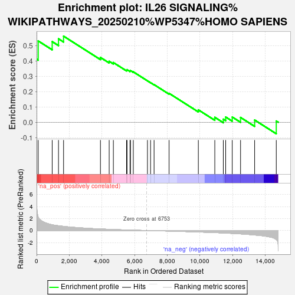

| | | Dataset | er_ranks |
| Phenotype | NoPhenotypeAvailable |
| Upregulated in class | na_pos |
| GeneSet | IL26 SIGNALING%WIKIPATHWAYS_20250210%WP5347%HOMO SAPIENS |
| Enrichment Score (ES) | 0.56074977 |
| Normalized Enrichment Score (NES) | 1.6337537 |
| Nominal p-value | 0.016333938 |
| FDR q-value | 1.0 |
| FWER p-Value | 1.0 |
Table: GSEA Results Summary

Fig 1: Enrichment plot: IL26 SIGNALING%WIKIPATHWAYS_20250210%WP5347%HOMO SAPIENS
Profile of the Running ES Score & Positions of GeneSet Members on the Rank Ordered List
| SYMBOL | RANK IN GENE LIST | RANK METRIC SCORE | RUNNING ES | CORE ENRICHMENT | | 1 | EPHA3 | 0 | 7.401 | 0.4109 | Yes |
| 2 | MAPK8 | 99 | 2.258 | 0.5297 | Yes |
| 3 | MAPK14 | 957 | 0.966 | 0.5253 | Yes |
| 4 | JUN | 1342 | 0.795 | 0.5434 | Yes |
| 5 | IL20RA | 1653 | 0.690 | 0.5607 | Yes |
| 6 | MAPK1 | 3911 | 0.255 | 0.4222 | No |
| 7 | NFATC1 | 4446 | 0.197 | 0.3970 | No |
| 8 | CASP3 | 4703 | 0.166 | 0.3889 | No |
| 9 | STAT1 | 5511 | 0.093 | 0.3394 | No |
| 10 | SMAD2 | 5540 | 0.091 | 0.3426 | No |
| 11 | RORC | 5723 | 0.075 | 0.3344 | No |
| 12 | STAT3 | 5749 | 0.073 | 0.3368 | No |
| 13 | MAPK9 | 5924 | 0.059 | 0.3283 | No |
| 14 | DDIT3 | 6791 | -0.002 | 0.2698 | No |
| 15 | IL33 | 6980 | -0.015 | 0.2579 | No |
| 16 | ACTA2 | 7197 | -0.030 | 0.2450 | No |
| 17 | BAX | 8115 | -0.099 | 0.1884 | No |
| 18 | JAK1 | 9907 | -0.248 | 0.0809 | No |
| 19 | SOCS3 | 10916 | -0.351 | 0.0322 | No |
| 20 | CTSK | 11437 | -0.413 | 0.0199 | No |
| 21 | RELA | 11582 | -0.432 | 0.0341 | No |
| 22 | NFKBIA | 11984 | -0.489 | 0.0342 | No |
| 23 | MAPK3 | 12494 | -0.569 | 0.0313 | No |
| 24 | TYK2 | 13356 | -0.749 | 0.0146 | No |
| 25 | MMP9 | 14681 | -1.494 | 0.0080 | No |
Table: GSEA details [plain text format]
Fig 2: IL26 SIGNALING%WIKIPATHWAYS_20250210%WP5347%HOMO SAPIENS: Random ES distribution
Gene set null distribution of ES for IL26 SIGNALING%WIKIPATHWAYS_20250210%WP5347%HOMO SAPIENS